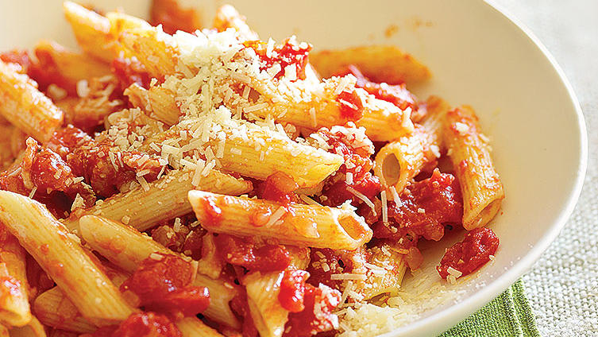

Pasta all'amatriciana

Description
This simple penne pasta dish features pancetta, diced tomatoes, red chile flakes, and parmesan cheese.
Ingredients
- 8 oz penne pasta
- 4 oz pancetta, cubed
- 1 cup chopped onion
- 1 tbsp garlic, minced
- 1 large can of diced tomatoes
- salt and freshly ground pepper
- 1 tbsp red chilli flakes
- 1/4 cup grated parmesan cheese
Steps
- Cook pasta according to package directions; drain and set aside.
- Cook pancetta in a large frying pan over medium-high heat until partly translucent. Spoon off most of drippings.
- Add onion and garlic; cook, stirring often, until browned, 5 minutes.
- Add remaining ingredients except parmesan and cook over high heat until juices have reduced by half, about 10 minutes.
- Add pasta, stir to coat, and transfer to a bowl. Sprinkle with parmesan.